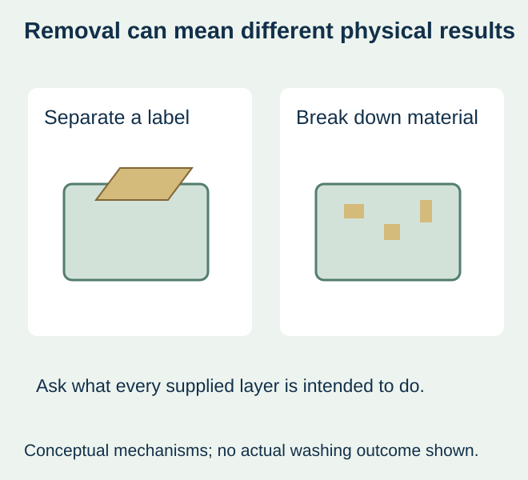
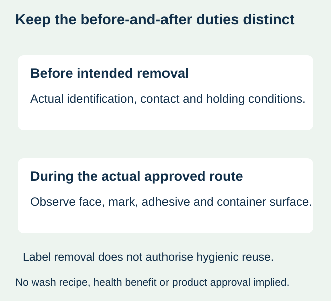

A food operation wants old identification removed from reusable containers. One proposal describes a label that peels away; another describes paper that disintegrates in water. The buyer calls both “easy-remove,” but the physical result and the process each proposal needs are different.
Decide whether the intended removal step should take off an identified physical label or break down the label material in the actual washing route. Then compare the complete proposed construction against both that removal task and the identification it must provide beforehand. Do not use dissolvable, removable and wash-off as interchangeable specifications.


Name the mechanism rather than a broad convenience claim
| Proposed description | Question for the actual supplier | What remains separate |
|---|---|---|
| Peel-off/removable label | Which construction is intended to separate under the defined peel/removal event? | Actual residue, surface damage and holding performance |
| Dissolvable/disintegrating label | Which parts of the finished construction break down under the relevant stated conditions? | The actual wash-route result and required identification beforehand |
| Industrial wash-off label | How does the identified construction release in the actual operator’s system? | Whether it detaches intact, fragments or behaves another specified way |
| Generic easy-remove offer | What material, method and result does the offer actually mean? | Every unprovided condition remains unresolved |
Avery Dennison’s food-rotation dissolvable-material overview describes its own label materials that disintegrate with water. This establishes an external material direction, not a result for another finished label or this site’s stock. No published removal speed, residue claim, food-contact statement or hygiene benefit is transferred to the proposed order.
Write down the label’s job before removal
Identify the actual container surface and intended outside label position. Record what the label must display, who adds any changing value and how long that identification is needed under the real process. A material chosen to respond to water still needs appropriate evidence for the conditions it encounters before deliberate removal.
If the operation exposes the identification to condensation, wiping or another wet step before it should be removed, tell the supplier exactly what that step is. Do not assume that all dissolvable products react identically, or that a brief dry sample proves the pre-removal duty. Ask for the actual product instructions and relevant finished-label comparison.


Keep the approved washing route as the starting point
Have the responsible operation describe the existing removal and washing sequence it can disclose. The label proposal should be evaluated for that route; an online purchasing guide does not authorise new detergent, temperature, soak time or mechanical action. Where the route is unknown, obtain it before asking for an unrestricted easy-remove guarantee.
If peel removal is an approved practical step, compare a supported removable construction under its relevant use history. If the operation requires material disintegration during an approved wash, ask the supplier what the exact face, adhesive, print and finish represent under that condition. If neither proposed route has relevant evidence, keep the material choice open rather than invent a wash recipe.
A demonstration that a paper component breaks apart does not by itself establish the behaviour of the adhesive, printed mark or complete finished label. Identify the whole supplied construction and the observations the process owner needs. Do not describe a mixed pile of detached pieces as proof of complete dissolution or a clean-looking container as a complete cleaning assessment.
Keep label observations and reuse release separate
Record what happens to the label and what remains on the container after the actual evaluation. The responsible food operation still owns cleaning, sanitation, container integrity and release for reuse. Label removal is one observation in that wider process, not a substitute for it.
For a hypothetical food-preparation container, the team might compare its present peel-removal task with an identified disintegrating construction in the already approved wash route. Retain the sample identities and relevant use history. Do not assign a measured labour saving, reduced contamination or a guaranteed number of reuse cycles without actual evidence.
Choose the supported construction, including marking and cost scope
If the label is handwritten or printed at packing, confirm the actual marking method as well as the removal mechanism. The writing-tool guide explains the manual-surface question. Print compatibility and correct date/lot content need their own review; a dissolvable face description does not establish either.
Ask for the actual offered quantity, format, material reference and scope. Any additional application, removal or stock-handling work belongs in the comparison using the operation’s own observations. No universal price premium, material saving or washing benefit is claimed.
Use the removal-lifecycle guide for the full holding/removal brief. Use the returnable-bottle guide only when that industrial route is relevant. The decision here is the actual material mechanism for temporary food-container identification. Dissolvable stock, finished-label conversion, testing or a particular removal result are not standing offers from this site and require project confirmation.
Discuss the unresolved label requirement
Send the actual food container and outside surface, holding/handling conditions, marking method and the existing approved removal or washing route. State whether the intended result is peel removal or material disintegration, the required observations and quantities; actual material availability needs confirmation. Review the food-label product scope and prepare a label specification inquiry. The contact page opens an email draft and lists email or WhatsApp for attachments. Supply, proof options, testing, pricing and timing require project confirmation.